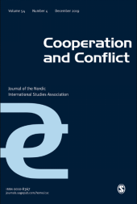

收录于合集 #新刊速递 123个
期刊简介

《合作与冲突》（Cooperation and Conflict）是发行超过50年的同行评议期刊，内容传统上集中于北欧和欧洲事务。该刊信奉学术多元主义，因此不代表任何一种特定的研究方法、研究路径、学术传统和学术流派。根据2018Journal Citation Reports显示，其影响因子为1.877，位列“国际关系”类别期刊第21位。
本期编委
编译： 李桐，王国欣
校对： 李桐，王国欣
审核： 孙通，李博轩 编辑： 赵怡雯
本期目录
- 角色概念、危机与格鲁吉亚的外交政策 ****
Role conceptions, crises, and Georgia’s foreign policy
- 北极圈地缘诗学： **** 俄罗斯的北极政治 ****
Arctic geopoetics: Russian politics at the North Pole
- 和平行动如何驱动或限制本国工作人员的比较研究： **** 内部竞争？ ****
Comparing how peace operations enable or restrict the influence of national staff: Contestation from within?
- 欧盟调解及其有效性的认知： **** 源自乌克兰和欧盟观点的比较研究 ****
Perceptions of EU mediation and mediation effectiveness: Comparing perspectives from Ukraine and the EU
- 学习部署民事能力： **** 联合国、欧洲安全与合作组织和欧洲联盟如何改变其危机管理制度 ****
Learning to deploy civilian capabilities: How the United Nations, Organization for Security and Co-operation in Europe and European Union have changed their crisis management institutions
6. **和平主义者与作为外交先锋的情报人员 ******
The peacenik and the spook as the diplomatic avant-garde
7. **睦邻友好的北欧地区中各国的地位追求 ******
Status seeking in the friendly Nordic neighborhood
摘要译文
1.
角色概念、危机与格鲁吉亚的外交政策
【题目】 Role conceptions, crises, and Georgia’s foreign policy
【作者】 Niklas Nilsson，瑞典国防学院助理教授
【摘要】
本文探讨了危机期间作为外交决策重要参考的国家角色概念的范围条件。相对其他因素而言，国家角色概念旨在为在与其他国家行为体关系中进行社会化进程的新兴国际机构提供一个更加精炼的分析视角。文章以对格鲁吉亚和美国官员的采访材料为基础，分析了格鲁吉亚在两次危机中的角色概念对于该国与美国的关系的重要性：2007年第比利斯骚乱和2008年格俄战争。该文章认为，危机提供了一种情景环境，在这种环境中与角色期望有关的适当行为的要求可能会与当前情况的要求发生冲突。为了解决随之而来的角色冲突，国家行为体需要进行合理的角色预期，避免自我与他者的角色预期过度偏离。反过来，这些策略涉及角色概念改变和稳定的可能性，并涉及其在外交政策中的制定。本文对格鲁吉亚政府在两次危机管理的分析表明，这种合理化和补偿的行为选择方式旨在帮助格鲁吉亚在现有国家角色概念界定中获得美国等国的认同。
This article explores the scope conditions of national role conceptions as
reference points for foreign policy decision making during crises. It aims to
contribute to a refined perspective of the agency of new states undergoing
socialization processes in relations with significant others. Drawing on a
primary material consisting of interviews with Georgian and US officials, the
article analyzes the significance of Georgia’s role conceptions in the
country’s relations with the USA in relation to two major crises: the 2007
riots in Tbilisi and the 2008 war with Russia. The article posits that crises
provide situational circumstances where the requirements of appropriate
behavior associated with role expectations may enter into conflict with the
demands of the immediate situation. In order to resolve ensuing role
conflicts, actors face the need to both rationalize role expectations, and to
compensate for departures from them. In turn, these strategies relate to the
possibility for change and stability in role conceptions, and by extension
their enactment in foreign policy. The analysis of the Georgian government’s
management of the two crises demonstrates actions that implied both
rationalization and compensation, aiming to retain the credibility of its
existing role conceptions in the eyes of its US counterparts.
【编译】李桐
【校对】王国欣
【审核】孙通、李博轩
2.
北极圈地缘诗学： 俄罗斯的北极政治
【题目】 Arctic geopoetics: Russian politics at the North Pole
【作者】 Hannes Hansen-Magnusson，卡迪夫大学讲师
【摘要】 本文尝试从地缘文化视角对俄罗斯北极政策进行探讨。这项研究是基于源自气候变化的实证观察，即由于气候变化，北极地貌正在发生深刻的变化，这引发了国际社会对该地区进行多边和单边治理的呼声。在这种普遍的意图异质性中，俄罗斯的政策为其介入该地区的动机提出了最为紧迫的问题。理解全球政治的文化路径最适合在这方面产生整体性的理解和解释，但是它们缺乏对俄罗斯身份空间维度的讨论。通过发展一种地理诗学上的解释，本文借助批判地理学的方法学见解对本研究进行了补充。地理诗学关注的是文化根源及其认知情感层面，因而在此基础上对北极的主张和相关政策引起了广大读者的共鸣。文章认为，俄罗斯的政策是建立在苏联社会主义现实主义的乌托邦理想的基础之上的，这种思潮在20世纪20年代及随后的几十年中被广泛认同。运用文学传统主题的解释工具，本文总结了构成俄罗斯连贯北极假想的三个重要特征：一是是英雄探险家；二是是征服自然；三是科学技术的作用。分析人士在发表政策评论时应注意如何使北极问题变得易于理解。
The article develops a geopoetic approach to Russian Arctic politics. It rests on the empirical observation that due to climate change, the Arctic landscape is undergoing profound transformations, which has led to multilateral governance efforts but also unilateral pursuits. In this general heterogeneity, Russia’s policies have raised the most pressing questions regarding the country’s motivations to engage in the region. Cultural approaches to global politics are most suitable to create holistic understandings and explanations in this regard, but they lack discussing a spatial dimension of Russian identity. By developing a geopoetic account, the article complements this research through methodological insights from critical geography. Geopoetics focuses on the cultural roots and their cognitive-emotional dimension, on the basis of which claims to the Arctic and related policies resonate with a broader audience. The article argues that Russian policies have their foundation in a utopian ideal of Soviet socialist realism that was widely popularised in the 1920s and later decades. Applying the hermeneutic tool of topos, the article highlights that three features stand out that interweave into a coherent imaginary of the Arctic: first, the heroic explorer; second, the conquest of nature; and third, the role of science and technology. Analysts would do well to bear in mind how the Arctic becomes intelligible when commenting on policies. ****
【编译】李桐
【校对】王国欣
【审核】孙通、李博轩
3.
和平行动如何驱动或限制本国工作人员的比较研究：内部竞争？
【题目】 Comparing how peace operations enable or restrict the influence of national staff: Contestation from within?
【作者】 Steffen Eckhard，康斯坦茨大学公共管理与管理理论专业助理教授
【摘要】 在国际和平行动中工作的文职人员中有很大一部分是东道国国民。现有研究尚未涉及这些当地征聘官员对和平建设的影响。理论上，有学者指出，为了在复杂的环境中完成任务，和平行动需要首先对当地的观念、政治和习俗进行了解。当地工作人员可以通过向当地社会了解相关知识对和平行动进程产生积极影响。但信息优势亦产生新的委托代理问题。和平行动很难仔细审查其雇员的忠诚度，因而面临内部瓦解的风险。实践表明，联合国(UN)、欧洲安全与合作组织(OSCE)和欧盟(EU)开展的和平行动，在如何通过授权或限制当地工作人员的影响力来应对随之而来的紧张局势方面存在显著差异。一组有关52个和平行动人员配置的新数据，以及对内部工作人员政策的分析显示，当地工作人员在影响和平建设政策执行方面的潜力存在很大差异，这些差异在欧洲安全与合作组织中表现得最为显著，联合国和欧盟次之。研究结论显示，鉴于不同文化背景工作人员在规范和知识方面容易产生分歧摩擦，因此国际和平行动应更加重视当地工作人员作为信息传递者的重要作用。
A large share of civilian staff working in international peace operations are nationals of the host state. Academic research has not yet investigated the effect of these locally recruited bureaucrats on peacebuilding. Theoretically, it is argued that to accomplish their missions in complex environments, peace operations require crucial knowledge about local perceptions, politics, and customs. Local staff can have a positive performance impact by soliciting such knowledge. But information advantages create new principal-agent problems. Peace operations have a hard time scrutinizing their employees’ allegiances, and they risk sabotage from within. Empirically, it is shown that peace operations conducted by the United Nations (UN), the Organization for Security and Co-operation in Europe (OSCE), and the European Union (EU) differ significantly in how they navigate the ensuing tension by enabling or restricting the influence of their local staff. A new data set on the staffing of 52 peace operations as well as analysis of internal staff policies yields significant variance in the potential of local staff to influence peacebuilding policy implementation, which is most extensive in the OSCE, followed by the UN and the EU. This finding warrants more attention on the role of local staff as information gatekeepers who could be at the center of potential frictions between international and local norms and knowledge.
【编译】李桐
【校对】王国欣
【审核】孙通、李博轩
4.
欧盟调解及其有效性的认知：源自乌克兰和欧盟观点的比较研究
【题目】 Perceptions of EU mediation and mediation effectiveness: Comparing perspectives from Ukraine and the EU 【作者】 Natalia Chaban, 坎特伯雷大学教授；Ole Elgström, 隆德大学荣休教授；Michèle Knodt，德国达姆施塔特工业大学教授 【摘要】 在一些为数不多但数量不断增长的文献中，欧盟常被界定为“一个有效的和平缔造者”。本文通过研究欧盟在对俄罗斯—乌克兰冲突中的调解有效性为这一领域做出了贡献。本文研究的重点在于对有效性的认知。基于半结构化访谈的信息，我们将欧盟的自我形象与乌克兰对欧盟调解的评价进行了比较。欧盟(包括其成员国)的调解效力如何？被感知到的有效性背后的原因是什么？我们从有关国际调解的文献中归纳出四个要素：感知的（不）偏向性、一致性、可信性以及对欧盟的调解策略的评价。欧盟及国际社会都指出欧盟成员国是现有俄乌冲突中最有效的调节者。双方就欧盟所扮演角色的问题持矛盾的态度。本文讨论了四个影响国际调解效力的决定因素，但对每个因素的关注程度差异较大。虽然偏向并非与调解有效性挂钩的直接因素，但欧盟调解政策的不连贯性是与其不协调和疲弱的对外政策直接相关的，这一问题在乌克兰问题中表现得尤为明显。
A small but growing literature has started to analyse the European Union (EU) ‘as an effective peacemaker’. We make a contribution to this field by investigating EU mediation effectiveness in the Russia–Ukraine conflict. The focus is on perceptions of effectiveness. Based on information from semi- structured interviews, we compare EU self-images with Ukrainian evaluations of EU mediation efforts. How effective is the EU, including its Member States, deemed to be? What factors are believed to lie behind perceived (in)effectiveness? We concentrate on four such factors, derived from the mediator literature: perceived (im)partiality, coherence and credibility and, finally, evaluations of the EU’s mediation strategies. Both internal and external views singled out EU member states as the most effective actors in current mediation. The role of EU was seen in ambivalent terms by both sides. All the four determinants of mediation effectiveness are discussed in our material, but differ considerably in the degree of attention given to each of them. While (im)partiality is not a factor that is linked to effectiveness in any straightforward way, EU incoherence is associated with inconsistent and weak policies, notably in the Ukraine material.
【编译】李桐
【校对】王国欣
【审核】孙通、李博轩
5.
学习部署民事能力：联合国、欧洲安全与合作组织和欧洲联盟如何改变其危机管理制度 ****
【题目】 Learning to deploy civilian capabilities: How the United Nations, Organization for Security and Co-operation in Europe and European Union have changed their crisis management institutions
【作者】 Hylke Dijkstra, 马斯特里赫特大学副教授和欧洲研究硕士主任；Petar Petrov, 马斯特里赫特大学助理教授；Ewa Mahr，马斯特里赫特大学博士候选人
【摘要】 国际组织不断提升民事部署能力来作为维和与危机管理行动的一部分。这种做法给他们带来了巨大挑战。不仅民事部署的数量迅速增加，而且民事任务的性质也非常多样化。本文分析了国际组织如何通过学习部署民事能力来应对日益增长和迅速演进的行动类型。鉴于以往的文献都是针对国际组织个案进行研究，本文比较了联合国、欧盟和欧洲安全与合作组织这三个最大的民事行为体的发展情况。借助组织学习的概念，本文表明这三个组织在过去的十年中民事能力各自发生了不同程度的重大变化。尽管欧盟成员国间的同质化更高并且更加发达，但相比于联合国和欧安组织却没能更好地学会如何部署民事能力。因此本文认为这些组织的民事部署能力在很大程度上取决于制度因素。
International organizations continuously deploy civilian capabilities as part
of their peacekeeping and crisis management operations. This presents them
with significant challenges. Not only are civilian deployments rapidly
increasing in quantity, but civilian missions are also very diverse in nature.
This article analyses how international organizations have learned to deploy
their civilian capabilities to deal with a growing number and fast evolving
types of operations. Whereas the previous literature has addressed this
question for individual international organizations, this article uniquely
compares developments in the United Nations (UN), European Union (EU) and
Organization for Security and Co-operation in Europe (OSCE), three of the
largest civilian actors. Drawing on the concept of organizational learning, it
shows that all three organizations have made significant changes over the last
decade in their civilian capabilities. The extent of these changes, however,
varies across these organizations. The article highlights that the EU, despite
its more homogeneous and wealthier membership, has not been able to better
learn to deploy its civilian capabilities than the UN or OSCE. We show that
the ability of these organizations to learn is, instead, highly dependent on
institutional factors.
【编译】王国欣
【校对】李桐
【审核】孙通、李博轩
6.
和平主义者与作为外交先锋的情报人员
【题目】 The peacenik and the spook as the diplomatic avant-garde
【作者】 Lior Lehrs，伦纳德·戴维斯国际关系研究所和耶路撒冷希伯来大学哈里·杜鲁门研究所博士后 【摘要】 在国家和非国家行为体如非法军事组织或恐怖主义组织之间的冲突中，当不存在官方的外交关系和承认时，就需要一个可以充当“外交先锋”的行为体的存在。本文界定了一种外交模式，在这种模式中突破性成就的出现是通过两类行为体间的合作实现的，即非官方公民外交官和情报机构的关键人物。这两类行为体都带有特定的资源：非官方公民外交官与非国家行为体有联系，而情报机构的官员可以在国家官方系统内提供支持。本文通过三个案例来分析上述外交模式：布伦丹·达迪和军情六处官员迈克尔·奥特利（英国和临时派爱尔兰共和军，1975-1993年）；威利·埃斯特胡伊斯和南非国家情报局局长尼尔·巴纳德（南非政府和南非非洲人国民大会，1987-1990年）；格肖恩·巴斯金和摩萨德官员大卫·梅丹（以色列和哈马斯，2011年）。本文探讨了这两类行为体间的独特关系以及二者的合作是如何促进与非国家武装行为体的谈判，并将这些过程分为三个阶段：两类行为体间联系的建立、对有关各方的劝说以及谈判转向秘密渠道的突破性时刻。
In conflicts between a state and a non-state actor, such as a paramilitary or terrorist organization, when no official diplomatic relations and recognition exists, there is a need for actors who can serve as a “diplomatic avant-garde.” This article identifies a diplomatic pattern in which breakthroughs occur through cooperative work between two types of actors: unofficial citizen diplomats and key figures in intelligence bodies. Each actor brings specific resources: unofficial actors have contacts with the non- state actor, while intelligence officers can offer backing from within the official system of the state. The article analyzes the topic using three case studies: Brendan Duddy and the MI6 officer Michael Oatley (UK and the Provisional IRA, 1975–1993); Willie Esterhuyse and the head of the South African National Intelligence Service, Neil Barnard (South African government and the ANC, 1987– 1990); and Gershon Baskin and the Mossad official David Meidan (Israel and Hamas, 2011). This study examines the unique relations between these two types of actors and how their collaboration promoted negotiations with non-state armed actors. It analyzes three stages: establishment of contact between these actors, persuasion of the relevant parties, and the breakthrough moment when talks shifted to an official back channel.
【编译】王国欣
【校对】李桐
【审核】孙通、李博轩
7.
睦邻友好的北欧地区中各国的地位追求
【题目】 Status seeking in the friendly Nordic neighborhood
【作者】 Pål Røren，南丹麦大学政治科学与公共管理系战争研究中心博士候选人
【摘要】
本文认为在世界政治中，社会群体间追求地位的方式取决于构成成员间互动的社会关系类型。北欧地区是以友谊和信任为标志的国家群体。在这里，北欧国家之间众多的社会联系使该地区成为一个“睦邻友好的地区”，这改变了北欧各国追求国家地位的方式。为了探索这种地位追求的动力机制，本文通过对北欧外交官的一系列访谈认为深厚的友谊既能促进各国对集体地位的追求，又能限制一国对个体地位的寻求。具体来说，将各自的社会群体转变为一个睦邻友好的地区使得北欧各国能够呈现一种集体政治的姿态并以此为基础寻求集体地位。这种做法使得北欧各国作为一个整体在世界政治中获得了更多的地位认同。此外，虽然友谊并没有消除北欧国家彼此间的地位竞争，但确实将这种竞争转变为一种友好的方式。事实上，尽管地区内的竞争持续存在，但本文发现北欧国家不可能以一种会伤害彼此友谊或睦邻友好关系的方式去竞争。
The article argues that the way status is pursued in social groups in world
politics is contingent on the type of social relations that constitute
interaction between the members. The Nordic region is a group of countries
marked by friendship and trust. Here, the numerous societal linkages between
the Nordic countries have made their region into a ‘friendly neighborhood’.
This has changed the way that these countries pursue status. To explore this
status dynamic, the article draws on a series of interviews with Nordic
diplomats and argues that a strong friendship both enables collective status
seeking, and constrains individual status seeking. Specifically, turning their
social group into a friendly neighborhood allows the Nordic countries to
posture as a collective polity and seek status on behalf of it. This grants
them more status recognition in world politics. Moreover, friendship does not
eliminate status rivalry, but it does turn it into a friendly kind of status
competition. Indeed, while the intra-regional intensity of the competition
endures, the article finds that the Nordic countries are unlikely to compete
in ways that might harm their friendship or their neighborhood.
【编译】王国欣
【校对】李桐
【审核】孙通、李博轩
点击左下角“ 阅读原文”可获取本期英文版原文
扫下方二维码查看往期精彩
【新刊速递】第01期 | Review of International Studies Vol.45, No.4, 2019
【新刊速递】第02期 | International Relations Vol.33, No.3, 2019
【新刊速递】第03期 | International Organization Vol.73, No.3, 2019
【新刊速递】第04期 | World Politics, Vol.71, No.4, 2019
【新刊速递】第05期 | European Journal of International
【新刊速递】第06期 | Security Studies, Vol.28, No.4, 2019
【新刊速递】第07期|International Secur.ity, Vol 44, No. 2, 2019
【新刊速递】第8期| Cambridge Review of International Affairs,Vol.32,No.4
【新刊速递】第09期| International Relations of Asia-Pacific Vol.19,No.3
【新刊速递】第10期 | International Studies Review, Volume.21, No.3, 2019

国政学人
支持学术公益与知识传播
微信扫一扫赞赏作者 __赞赏
已喜欢，对作者说句悄悄话
取消 __
发送给作者
发送
最多40字，当前共字
上一页 1/3 下一页
长按二维码向我转账
支持学术公益与知识传播
受苹果公司新规定影响，微信 iOS 版的赞赏功能被关闭，可通过二维码转账支持公众号。